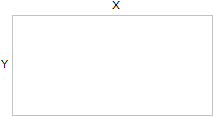
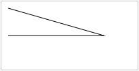

HTML 5 Canvas
canvas 元素用于在网页上绘制图形。
什么是 Canvas？
HTML5 的 canvas 元素使用 JavaScript 在网页上绘制图像。
画布是一个矩形区域，您可以控制其每一像素。
canvas 拥有多种绘制路径、矩形、圆形、字符以及添加图像的方法。
创建 Canvas 元素
向 HTML5 页面添加 canvas 元素。
规定元素的 id、宽度和高度：
<canvas id="myCanvas" width="200" height="100"></canvas>
通过 JavaScript 来绘制
canvas 元素本身是没有绘图能力的。所有的绘制工作必须在 JavaScript 内部完成：
<script type="text/javascript">
var c=document.getElementById("myCanvas");
var cxt=c.getContext("2d");
cxt.fillStyle="#FF0000";
cxt.fillRect(0,0,150,75);
</script>
JavaScript 使用 id 来寻找 canvas 元素：
var c=document.getElementById("myCanvas");
然后，创建 context 对象：
var cxt=c.getContext("2d");
getContext("2d") 对象是内建的 HTML5 对象，拥有多种绘制路径、矩形、圆形、字符以及添加图像的方法。
下面的两行代码绘制一个红色的矩形：
cxt.fillStyle="#FF0000"; cxt.fillRect(0,0,150,75);
fillStyle 方法将其染成红色，fillRect 方法规定了形状、位置和尺寸。
理解坐标
上面的 fillRect 方法拥有参数 (0,0,150,75)。
意思是：在画布上绘制 150x75 的矩形，从左上角开始 (0,0)。
如下图所示，画布的 X 和 Y 坐标用于在画布上对绘画进行定位。
更多 Canvas 实例
下面的在 canvas 元素上进行绘画的更多实例：
实例 - 线条
通过指定从何处开始，在何处结束，来绘制一条线：
JavaScript 代码：
<script type="text/javascript">
var c=document.getElementById("myCanvas");
var cxt=c.getContext("2d");
cxt.moveTo(10,10);
cxt.lineTo(150,50);
cxt.lineTo(10,50);
cxt.stroke();
</script>
canvas 元素：
<canvas id="myCanvas" width="200" height="100" style="border:1px solid #c3c3c3;"> Your browser does not support the canvas element. </canvas>
实例 - 圆形
通过规定尺寸、颜色和位置，来绘制一个圆：

JavaScript 代码：
<script type="text/javascript">
var c=document.getElementById("myCanvas");
var cxt=c.getContext("2d");
cxt.fillStyle="#FF0000";
cxt.beginPath();
cxt.arc(70,18,15,0,Math.PI*2,true);
cxt.closePath();
cxt.fill();
</script>
canvas 元素：
<canvas id="myCanvas" width="200" height="100" style="border:1px solid #c3c3c3;"> Your browser does not support the canvas element. </canvas>
实例 - 渐变
使用您指定的颜色来绘制渐变背景：

JavaScript 代码：
<script type="text/javascript">
var c=document.getElementById("myCanvas");
var cxt=c.getContext("2d");
var grd=cxt.createLinearGradient(0,0,175,50);
grd.addColorStop(0,"#FF0000");
grd.addColorStop(1,"#00FF00");
cxt.fillStyle=grd;
cxt.fillRect(0,0,175,50);
</script>
canvas 元素：
<canvas id="myCanvas" width="200" height="100" style="border:1px solid #c3c3c3;"> Your browser does not support the canvas element. </canvas>
实例 - 图像
把一幅图像放置到画布上：

JavaScript 代码：
<script type="text/javascript">
var c=document.getElementById("myCanvas");
var cxt=c.getContext("2d");
var img=new Image()
img.src="flower.png"
cxt.drawImage(img,0,0);
</script>
canvas 元素：
<canvas id="myCanvas" width="200" height="100" style="border:1px solid #c3c3c3;"> Your browser does not support the canvas element. </canvas>